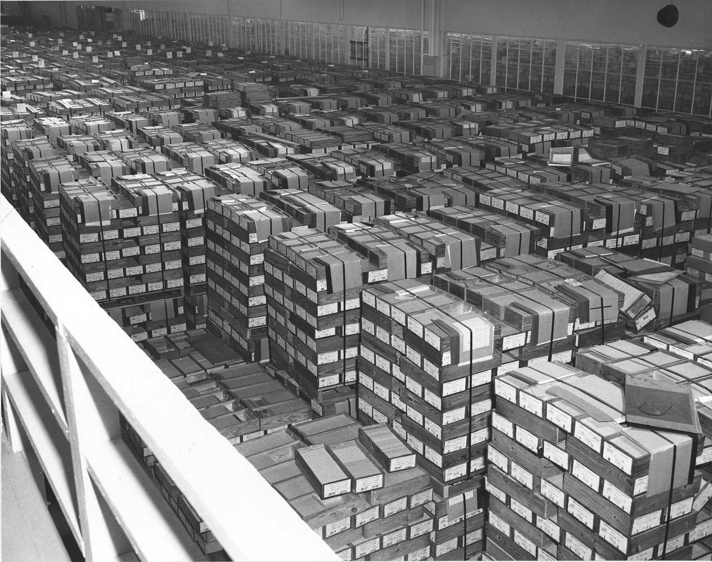

call me maybe
Veri hazırlamadan eğitime kadar, sıfırdan özgün bir büyük dil modeli.
- Veri hazırlama, tokenizasyon, model mimarisi ve eğitim sürecini baştan sona kendim tasarlıyorum.
- Embedding, self-attention ve feed-forward katmanlarını hazır çerçeveye yaslanmadan implemente ediyorum; amaç LLM’lerin içini gerçekten anlamak.
- Çıktı kalitesini ve hesaplama verimliliğini artırmak için eğitim ve değerlendirme deneyleri yürütüyorum.
